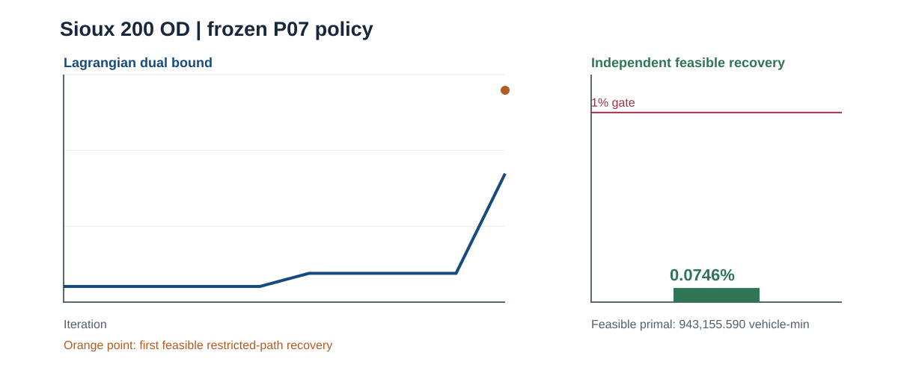
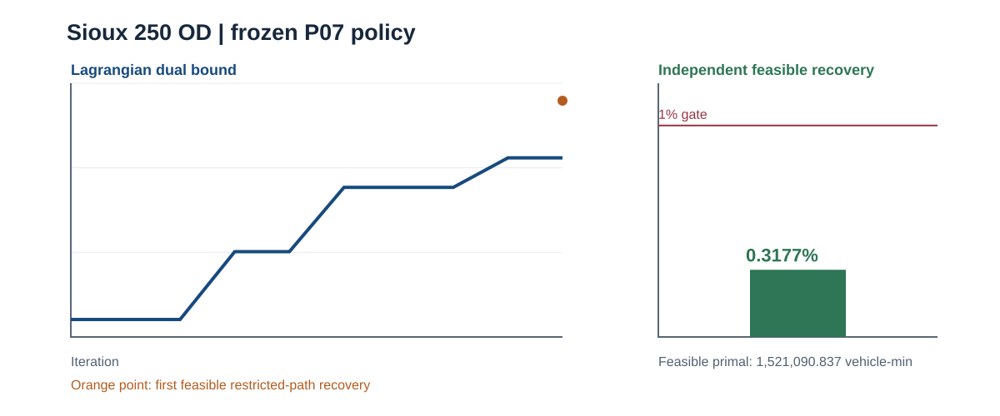
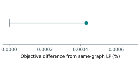
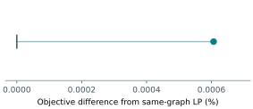

Documentation / Distributed assignment / accepted bounded evidence and gates
Distributed assignment / accepted bounded evidence and gates
These methods sit alongside, not in place of, the static FW, official Algorithm B and finite space–time CG branches. Lagrangian R2 and the earlier ADMM R1 record below use fixed-cost, hard-capacity selected-OD finite time-expanded Sioux instances. The current ADMM R2_S cross-city method and its Sioux / Boston evidence are documented separately. Official tap-b Algorithm B addresses a different static BPR/Beckmann user-equilibrium problem. No cross-contract objective ranking is meaningful.
Lagrangian capacity pricing with separate primal recovery
The dual solver prices shared arc capacities and generates commodity paths. Its best dual value is a lower bound. A separate restricted-path LP recovers a feasible primal upper bound; the dual routine did not directly output that flow. The independent evaluator checked the recovered path and physical-link flows, demand conservation, capacities, connectors and objective without optimizer calls. Reference-LP primal paths, flows and duals were not used to generate the algorithm's paths. Public source, fixtures, histories and exact summary.
| Selected Sioux instance | Dual lower bound (vehicle-min) | Feasible recovered primal (vehicle-min) | Certified gap | Gate |
|---|---|---|---|---|
| 200 OD | 942,452.403471 | 943,155.589771 | 0.0746% | Accepted regression gate |
| 250 OD | 1,516,258.347432 | 1,521,090.836620 | 0.3177% | Accepted, frozen 1% gate |
 |  |
Accepted saved P07 histories. Each recovered primal matches the arc-flow LP objective on its own selected-OD finite graph. The two graphs and demands are different; the gap is not a static UE gap.
Only the accepted Sioux selected-OD Lagrangian results are summarized here; no Boston result is presented as accepted.
ADMM local/consensus shared-capacity decomposition
The R1 ADMM implementation uses local commodity arc flows and consensus/capacity variables on the same selected-OD fixed-cost space–time model. The declared primal/dual residual thresholds and independent conservation/capacity checks passed for Sioux 200 and 250 OD. The finite nonzero difference from each same-graph arc-flow LP is not exact equality. Public source, C0 fixture, 200-OD saved history and summary.
| Selected Sioux instance | ADMM objective (vehicle-min) | Own arc-flow LP (vehicle-min) | LP-relative difference | Outer iterations | Status |
|---|---|---|---|---|---|
| 200 OD | 943,159.682268 | 943,155.589771 | 0.000434% | 74 | Accepted bounded result |
| 250 OD | 1,521,100.065788 | 1,521,090.836620 | 0.000607% | 94 | Accepted bounded result |
 |  |
Paired scalar saved-result figures, identical axis and layout: the vertical tick is each instance's own LP reference (0%); the dot is the ADMM objective difference. The 250-OD public evidence supplies final metrics, not an iteration history, so no 250-OD trajectory was invented. The accepted 200-OD detailed residual/consensus figure is supplemental.
{kind=link}
Only the earlier Sioux selected-OD R1 ADMM results are summarized in this section. The subsequently accepted frozen-policy R2_S Boston holdout is a different version and does not retroactively change the R1 record.
The accepted Sioux Lagrangian/ADMM selected subsets are not the full 528-OD network and are not a calibrated city forecast. See the case coverage matrix, Sioux CG page, and static Algorithm B method for the distinct evidence and certificate limits.